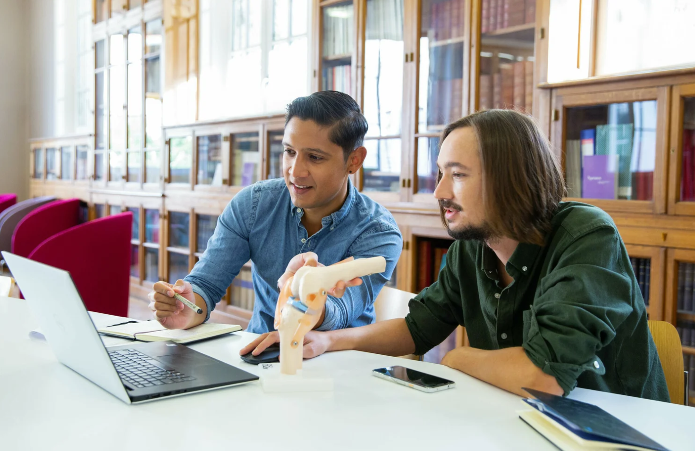
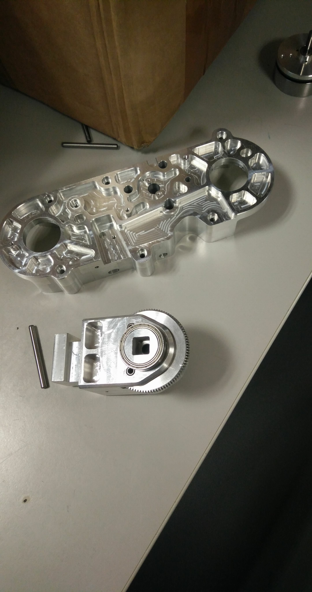

01 — ÉTUDES

Conception mécanique & bureau d'études
« De l'idée au plan détaillé, je conçois et adapte vos pièces, mécanismes et ensembles mécaniques. »
Des compétences complémentaires pour étudier, concevoir, faire évoluer et concrétiser des solutions mécaniques et techniques. J'interviens selon les besoins, en appui d'un bureau d'études comme sur des projets indépendants.

« De l'idée au plan détaillé, je conçois et adapte vos pièces, mécanismes et ensembles mécaniques. »

« Je conçois des pièces et des ensembles mécaniques en tenant compte des contraintes de fabrication et des matériaux. »
Parlons de votre besoin et du périmètre d'intervention.